Research notebook | updated
Nihonga 日本画
A smaller image model, with every cut measured.
We are compressing Qwen-Image-2.1: identify transformer blocks that can be replaced, learn inexpensive bridges, and distill the original model’s behavior back into the student. This is our working research record, including results that did not work.
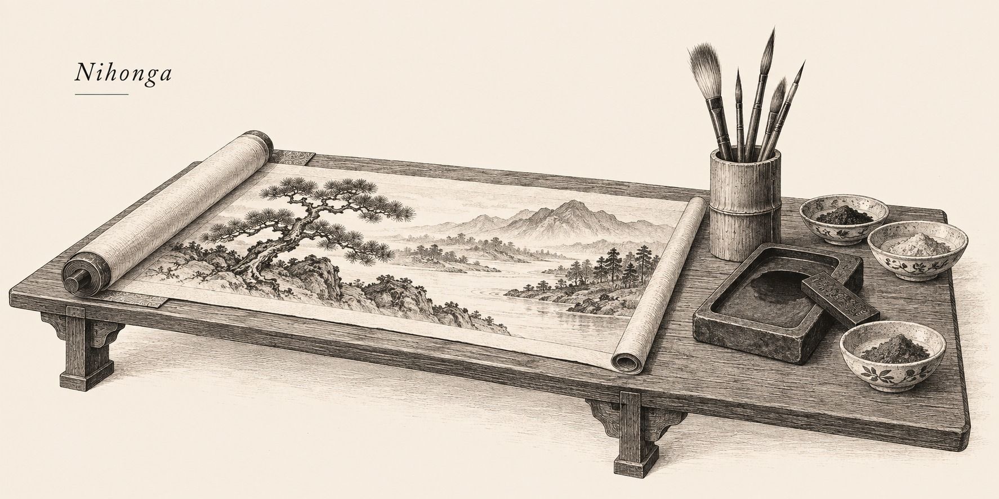
Phases 0–2 · establish the reference
Understand the model before removing anything
The inspected transformer has 32 blocks, a hidden width of 4,096, and approximately 7.115 billion parameters. The 60-layer examples in the original plan are illustrative; our experiments use this actual 32-block architecture. The model predicts a velocity that updates the noisy latent at each denoising step; the VAE decodes the final latent into an image.
What “internal” means
Internal means our own synthetic prompt dataset, built for this compression project. It is separate from Qwen-Image-Bench. The “Internal” baseline row is specifically its 1,007-prompt held-out internal-test split, not the training set and not all 20,000 pilot prompts. Qwen-Image-Bench supplies the other two rows, with the same 1,000 benchmark items evaluated in Chinese and English.
Why build our own dataset?
We need prompts to train the bridges and heal the student without training on benchmark questions. We also need validation prompts for choosing checkpoints and a separate test set for evaluating changes. A broad synthetic corpus lets us deliberately cover counting, spatial relations, text rendering, materials, scenes and visual styles instead of relying on whichever examples happen to be easy. For distillation, the original image model supplies hidden states and velocity targets; real-image training pairs are not required for this stage.
How we created it
- 1 · structured prompts
- Generate a 100,000-prompt template pool across five capability groups and 38 subdimensions. Combine objects, counts, colors, relations, materials and scenes with difficulty levels 1–5, styles, prompt formats and aspect ratios. Exact normalized duplicate prompts are removed. Counting and spatial relations receive extra weight, and text rendering receives twice its unadjusted subdimension weight.
- 2 · stable partitions
- Assign deterministic IDs and seeds, stratify within capability/subdimension/difficulty, then select a 20,000-prompt prefix by a saved pool rank. The intended split is approximately 90% train, 5% validation and 5% internal test. The actual pilot sizes are 17,991 / 1,002 / 1,007. Split assignments remain fixed when growing the pool.
- 3 · natural language
- Use Qwen3-8B through vLLM on Modal to rewrite selected English prompts and translate about 10% into Chinese. Pure templates can cover a narrow set of sentence shapes; natural wording and Chinese prompts broaden the conditioning the student sees. Automatic checks try to preserve quoted text and key constraints; failed rewrites fall back to the original template. Raw responses are retained.
- 4 · benchmark separation
- Check normalized exact matches and English 6-word / Chinese 8-character n-gram overlap against a pinned Qwen-Image-Bench prompt snapshot, both before and after rewriting. At the configured 0.5 overlap threshold, the template-pool check removed zero prompts; no final rewrites were rejected for benchmark overlap. These checks reduce detectable contamination, but do not prove every prompt is semantically unrelated.
- 5 · serialize the record
- Save each prompt’s capability, subdimension, facet, difficulty, style, aspect ratio, language, source, original template, ID, seed and split. Save the generation configuration, raw LLM outputs, overlap checks, distributions and artifact hashes. Rerunning reads the existing results rather than generating the corpus again.
The 100,000-prompt master pool is the template reservoir. Natural-language rewriting and translation were completed for the 20,000-prompt pilot; we have not trained on all 100,000 prompts. The bars show the actual pilot distributions from the saved Phase 1 statistics, not planned quotas. Wording checks are automatic rather than a guarantee of perfect constraint preservation.
A saved internal-test example
Create a photorealistic café chalkboard displaying “Today’s special: tomato soup and grilled cheese” in legible chalk writing, soft shadows, mysterious atmosphere.
This held-out example tests long text rendering: creative generation, difficulty 5, photographic style, square aspect ratio, English LLM rewrite. Its seed and original template are saved. It is a test prompt, not a bridge-training example.
| Split / benchmark | Role | How used so far |
|---|---|---|
| Train · 17,991 prompts | Fit model parameters | 20 selected prompts in the bridge and healing pilots |
| Validation · 1,002 prompts | Choose candidates and checkpoints | 10 selected prompts, reused across the small pilots |
| Internal test · 1,007 prompts | Our held-out evaluation set | All baseline images; subsets for Phase 3 diagnostics |
| Qwen-Image-Bench · 1,000 bilingual items | External benchmark · evaluation only | 1,000 Chinese and 1,000 English baseline images |
The original image model baseline
We generated and judged 3,007 reference images: 1,000 Chinese benchmark prompts, 1,000 English benchmark prompts and 1,007 internal prompts. Another 301 paired regenerations measure generation-and-judge variation. Prompts, seeds, resolutions, scheduler settings, model revisions and judge outputs are saved.
| Evaluation set | Images | Overall | Prompt adherence | Text rendering |
|---|---|---|---|---|
| Bench Cn | 1000 | 53.62 | 54.64 | 43.59 |
| Bench En | 1000 | 53.67 | 53.88 | 41.69 |
| Internal | 1007 | 56.08 | 57.13 | 70.49 |
These are our local judge scores, not a claim of an official leaderboard result. Text scores cover only applicable prompts; contributing counts are included in the downloadable data. Judge calibration found an approximately 2.5-point aesthetics offset; the judge remains frozen for paired comparisons.
- Baseline speed
- 6.172 seconds per image on an H100 80 GB, batch size 1, 40 denoising steps; 80 timed calls across eight aspect ratios after warm-up.
- Baseline memory
- 36.92 GiB peak allocated VRAM across those calls. Student inference has not yet been benchmarked under the same protocol.
Phase 3 · measure the missing update
Similarity is a clue; images decide what it misses
We measured all 32 transformer blocks before choosing which ones to replace. On 64 prompts, at three denoising stages, we compared the hidden states entering and leaving every block. Blocks 2, 3, 4 and 5 had the smallest consistent changes, so we chose them as bridge candidates. The choice came from the measurements.
To make that choice, we took each block’s average relative L2 change at each of the three stages, kept the largest of those three averages, and ranked all 32 blocks from smallest to largest. The first four were blocks 2, 4, 5 and 3. After selecting them, we temporarily skipped each of those four blocks separately to measure how much that changed the model’s velocity prediction. The all-block activation comparison and the four-candidate bypass tests are two different experiments.
The initial candidate ranking
| Rank | Original block | Largest stage-average L2 change | Decision |
|---|---|---|---|
| 1 | 2 | 8.681% | Initial candidate |
| 2 | 4 | 9.574% | Initial candidate |
| 3 | 5 | 10.043% | Initial candidate |
| 4 | 3 | 10.881% | Initial candidate |
| 5 | 1 | 11.740% | Comparison context |
| 6 | 6 | 15.500% | Comparison context |
| 7 | 9 | 16.504% | Comparison context |
| 8 | 10 | 16.912% | Comparison context |
This rule favors blocks with consistently small updates across the sampled denoising stages, rather than a block that appears unimportant at only one stage. It is a ranking of local hidden-state changes, not yet bypass velocity errors or image quality. “Largest stage average” means the largest of three means over 64 prompts; it is not the worst individual prompt. The initial rank order is 2, 4, 5, 3; written in model order, the selected set is 2–5.
The activation measurements
We measured all 32 blocks on 64 fixed internal prompts at denoising steps 0, 19 and 39 of the 40-step teacher: 6,144 block/stage observations. Hooks compare image-token states immediately before and after each block, excluding the text prefix. Each cosine is averaged over image tokens, then across prompts. The table shows the four tested candidates; the graph and downloadable record cover every block.
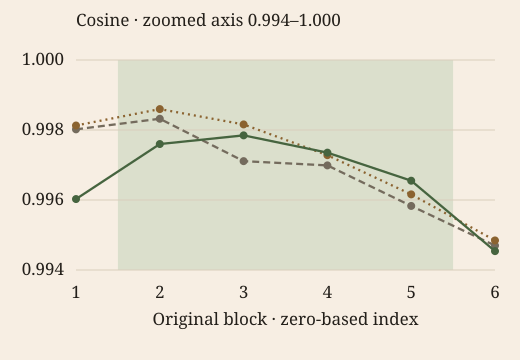
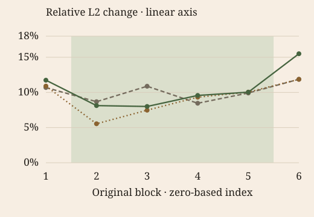
- early · dashed
- middle · dotted
- final · solid
These views zoom into blocks 1–6, including a neighbor on each side of the tested 2–5 batch. The cosine axis is deliberately narrowed to 0.994–1.000; its larger-looking differences are still small absolute changes. Relative L2 is ‖h_out − h_in‖₂ / ‖h_in‖₂, reported as a percentage on a separate linear axis. Cosine compares direction; L2 also responds to changes in magnitude. The green wash identifies the tested batch, not an acceptance region.
Show all 32 blocks · full-range cosine and logarithmic relative L2
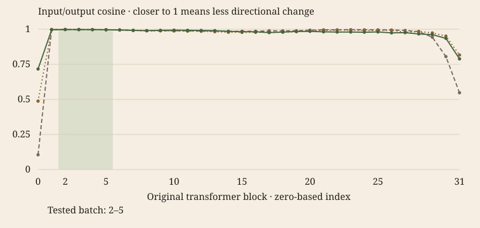
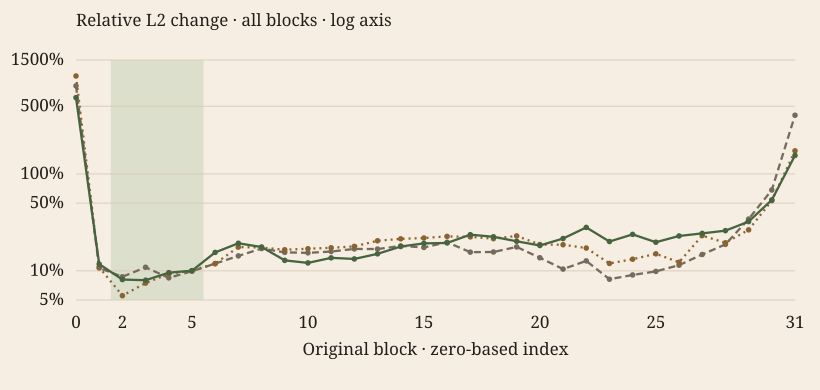
The L2 overview uses a log scale: equal vertical distances represent equal ratios rather than equal percentage-point changes. It preserves block 0’s update, which exceeds 800% of its input norm at the early stage, while keeping other blocks visible. All plotted observations fit the stated axes; none are clipped. The stage legend above applies to both overviews.
| Original block | Early cosine | Middle cosine | Final cosine |
|---|---|---|---|
| 2 | 0.998321 | 0.998597 | 0.997599 |
| 3 | 0.997110 | 0.998159 | 0.997847 |
| 4 | 0.996989 | 0.997281 | 0.997353 |
| 5 | 0.995830 | 0.996161 | 0.996551 |
| Original block | Early change | Middle change | Final change |
|---|---|---|---|
| 2 | 8.681% | 5.544% | 8.126% |
| 3 | 10.881% | 7.473% | 8.003% |
| 4 | 8.460% | 9.322% | 9.574% |
| 5 | 9.916% | 10.043% | 10.034% |
For example, block 2’s early cosine is 0.998321, but the update still has a norm equal to 8.681% of its input’s norm. High cosine does not imply a negligible update or 99.8% image quality. Block 1 and some later blocks also have high cosine; the shortlist was determined by the maximum stage-average relative L2 change, rather than cosine alone. These four earn a first test, not automatic approval for removal. Prompt-level distributions and per-capability aggregates are in the measurements.
What happens when each update is removed?
An identity bypass returns h_out = h_in, so the missing block contributes no update. We tested each candidate separately on the same five pilot prompts × three stages, using saved teacher-trajectory inputs and rebuilt student prefix caches. Each block has 15 velocity comparisons, with intact-teacher replay controls matching exactly within the diagnostic. These five-prompt Phase 3 probes are distinct from the later ten-prompt bridge-validation set.
| Skipped block | Early error | Middle error | Final error | Worst case |
|---|---|---|---|---|
| 2 | 16.407% | 4.145% | 18.962% | 21.396% |
| 3 | 15.801% | 3.442% | 11.854% | 18.531% |
| 4 | 10.811% | 2.687% | 5.433% | 17.797% |
| 5 | 12.740% | 2.813% | 3.687% | 17.003% |
Block 2 has the strongest activation similarity of the tested candidates early and in the middle, yet its omission causes the largest mean velocity errors at all three stages. Block 4 has the lowest mean bypass error early and in the middle; block 5 is lowest at the final stage. Similarity helps nominate experiments, but bypass sensitivity and finished images change the ranking.
The worst-case column is the largest error among that block’s 15 prompt/stage cases. Velocity error is a prediction difference, not a percentage of image-quality loss. These individual interventions do not establish that several blocks can be removed together, and no bridge is fitted in this diagnostic.
What the first image comparisons showed
Five prompts, one per capability, were generated with block 4 or block 5 skipped: ten bypass images. In the astronaut example, skipping block 4 loses the spacesuit. Skipping block 5 retains it. That initially favors block 5 for closer study, while all four candidates remain eligible for learned bridges.
Each sheet reads teacher / skip block 4 / skip block 5, left to right. These are identity-bypass images from Phase 3, before bridge training or healing. Teacher images came from an earlier run; unresolved cross-run variation limits causal pixel comparisons. Observations are manual, not a blinded quality study. Open any sheet at full resolution.
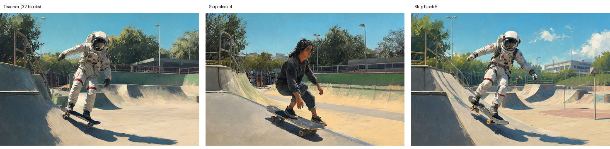
The teacher depicts an astronaut. The block-4 identity bypass loses the spacesuit; block 5 retains it, with a different pose and background.
Pixel MAE and PSNR record changes in composition and appearance, but do not directly measure prompt adherence or aesthetic quality. None of these identity bypasses is accepted as the finished model.
Phases 4–5 · recover the missing update cheaply
A small residual bridge in place of a full block
The bridge projects 4,096 features down to 256, applies GELU, projects back up, and adds the input: h′ = h + W_up GELU(W_down h). Each bridge has 2,097,152 parameters. We fit four independent candidates, replacing one original block at a time; the four bridges are not inserted together.
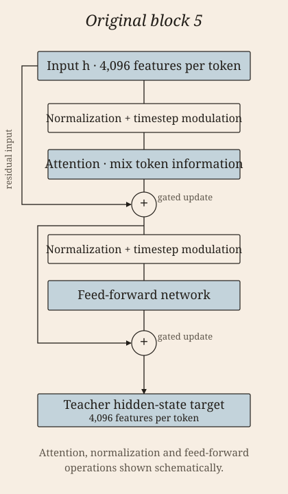
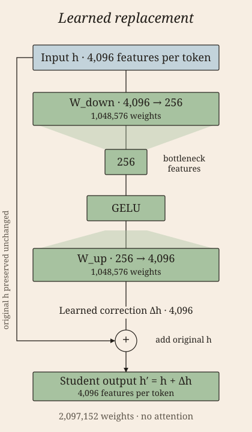
The student keeps the same 4,096-feature input and output interface. Only the correction travels through the 256-feature bottleneck; the residual path keeps the original information. GELU is a nonlinear transformation of those 256 features. The bridge processes each token separately without attention and learns to approximate the removed block’s update. The diagrams show shapes and operations, not identical teacher and student values or measured speedups. Open either diagram for the standalone SVG.
Bridge-only pretraining keeps the rest of the model frozen. Each candidate gets 500 updates using cached hidden states from 20 training prompts, with 10 validation prompts selecting checkpoints. The fitting objective balances prompt tokens and early, middle and late image tokens, combining normalized direction matching with a smaller relative squared-error term. Block 5’s selected checkpoint is update 300.
Does a better hidden-state fit improve the whole prediction?
We replay each identity and trained student against the verified teacher, using the same saved inputs at three stages. Each candidate has 30 comparisons; there are 240 student forwards across four candidates and two variants.
- identity bypass
- pretrained bridge
| Original block | Identity error | Bridge error | Relative reduction | Cases improved |
|---|---|---|---|---|
| 2 | 12.879% | 12.023% | 6.64% | 27 / 30 |
| 3 | 10.637% | 10.238% | 3.74% | 20 / 30 |
| 4 | 7.160% | 5.873% | 17.97% | 26 / 30 |
| 5 | 6.406% | 5.518% | 13.86% | 24 / 30 |
How to read the percentages. Velocity error is ‖student − teacher‖₂ / ‖teacher‖₂, averaged equally across prompts and stages. For block 2, 12.8788036% becomes 12.0234947%: a drop of 0.855309 percentage points. Dividing that drop by the original 12.8788036% gives a 6.64% relative reduction. This is a fraction of prediction error removed, not an image-quality improvement. “27 / 30” counts the cases with lower error.
Block 5 has the lowest mean trained error, 5.518%, and a worst case of 15.095%, so it is selected for the healing pilot. Block 4 removes a larger fraction of its identity error but ends at a slightly higher mean, 5.873%. Block 3 slightly regresses at the early and middle stages despite improving its overall mean. The small reused validation set does not establish statistical superiority.
Phase 6 · first make the supervision repeatable
A replay discrepancy paused training
Fresh teacher predictions initially disagreed with historical saved velocities beyond our 0.1% relative-L2 tolerance. Repeating a forward in the same process was stable, and full tensor-state fingerprints matched across fresh processes. The exact cause of the historical discrepancy remains unresolved.
The numerical contract we verified
We pinned the model revision and transformer source, H100 hardware and software versions, BF16 weights, deterministic algorithms, math attention, TF32 and reduction settings, exact input order and cache lifecycle. Each prompt gets a fresh cache; early-stage conditioning is extracted before cached middle and late forwards. Reference files are loaded after predictions are made. The audit covers 301 state tensors, including otherwise unregistered positional tables.
Under this contract, all 90 teacher predictions match the new saved references exactly. Historical targets and weights remain preserved. This establishes a working repeatable setup; it does not isolate which individual setting caused the old mismatch or prove that every setting is necessary.
Did the bridges need to be trained again?
We captured 360 fresh block/stage hidden-state pairs for the same 30 prompts and token selections. Frozen bridge validation objectives differ from the historical objectives by less than 0.05%. The replay change alone therefore does not justify replacing the Phase 5 training results.
| Block | Fresh hidden-fit objective | Reduction vs identity | Change vs historical fit |
|---|---|---|---|
| 2 | 0.003969 | 45.53% | -0.0082% |
| 3 | 0.005213 | 38.00% | -0.0432% |
| 4 | 0.005037 | 49.70% | +0.0175% |
| 5 | 0.006712 | 61.40% | -0.0273% |
The hidden-fit objective combines direction and relative squared errors; it has no direct percentage interpretation. Its 38–61% reductions cannot be compared as if they were the same metric as the 3.74–17.97% velocity-error reductions.
Phase 6 | architecture healing
Full-student healing and generated-image QA
The original teacher has 32 transformer blocks. The current student has 31 surviving blocks and one pretrained bridge at slot 5. Phase 5 trained that bridge to replace the missing block's hidden-state update. Phase 6 then tested whether further training helps the student match the teacher's denoising velocity at the same prompt, noisy latent and timestep. Both models still use 40 denoising steps.
The intended healing pass updates the entire student: all surviving transformer weights and the single bridge, 6,899,117,824 parameters in total. The teacher stays frozen. We attached no LoRA in the full-student runs. A separate LoRA for few-step speed distillation belongs to a later phase.
| Experiment | Trainable weights | Updates | Final validation error | Selected update |
|---|---|---|---|---|
| Bridge + LoRA, rate 0.0001 | 10,223,616 | 120 | 7.188% | 0 |
| Bridge + LoRA, rate 0.00001 | 10,223,616 | 120 | 6.113% | 0 |
| Bridge only, rate 0.0001 | 2,097,152 | 120 | 6.153% | 0 |
| Full student, rate 0.0001 | 6,899,117,824 | 60 | 54.387% | 0 |
| Full student, rate 0.000001 | 6,899,117,824 | 60 | 5.654% | 0 |
All five pilots began at 5.518% with the pretrained bridge. Every saved training run selected update 0 on the original 10 prompts. The bridge + LoRA and bridge-only trials are diagnostic ablations; the two full-student trials answer the intended healing-scope question. A passed run means its execution controls passed, not that its trained checkpoint improved quality.
How the full-student trials worked
Each run made 60 shuffled updates from 20 training prompts at three saved noise stages. The loss combined teacher-student velocity error, hidden-state alignment at surviving slots 2-4, and bridge output alignment at slot 5. Ten different validation prompts chose among updates 0, 30 and 60. Exact teacher replay, baseline reproduction, gradient flow to the bridge and surviving weights, and selected-checkpoint reload were checked. Checkpoints, optimizer state, predictions, reports and hashes were saved separately.
| Updates | Rate 0.0001 | Rate 0.000001 |
|---|---|---|
| 0 | 5.518% | 5.518% |
| 30 | 38.183% | 5.585% |
| 60 | 54.387% | 5.654% |
At update 60 the 0.0001 run reached 54.387%, a severe regression. Reducing the rate 100-fold kept the run near baseline, but its 5.654% still exceeded 5.518%. These short runs therefore did not produce a better healed student. They do not establish whether broader data, different loss weights or another optimizer could help.
A closer look at the lower-rate run shows why its mean can rise despite local gains: 21 of 30 validation prompt/stage comparisons improved, but the early-noise average rose from 9.947% to 10.371%. The largest regressions were early-noise cases. This is a small, reused validation set; the pattern guides diagnosis but does not identify a cause.
A broader check of the selected bridge
We tested the unchanged pretrained-bridge student on 50 additional validation prompts, 10 from each prompt group, at early, middle and late noise stages. The original 10-prompt calibration measured 5.531% in this replay, close to the earlier 5.518%. The new 50-prompt mean was 5.393%. No student weight was updated.
| Noise stage | Mean teacher-student velocity error |
|---|---|
| Early | 10.051% |
| Middle | 2.572% |
| Late | 3.556% |
This extends the selected bridge's fixed-input check to 150 new prompt/stage comparisons. It is still a validation set, not an independent image-quality benchmark. Early noise remains the largest source of teacher-student disagreement.
The trained checkpoint on the same new inputs
The low-rate update-60 checkpoint still regresses on the original 10 prompts: its control mean was 5.655%. On the 50 new prompts, however, it improved mean teacher agreement from 5.393% to 5.251%; 121 of 150 paired prompt/stage comparisons improved. The new prompt selection was fixed before this checkpoint comparison. The disagreement between samples makes the original 10-prompt selection uncertain.
| Noise stage | Pretrained bridge | Low-rate update 60 |
|---|---|---|
| Early | 10.051% | 9.736% |
| Middle | 2.572% | 2.553% |
| Late | 3.556% | 3.465% |
This is teacher-prediction agreement on saved noisy inputs, not an image-quality result. The separate matched-image pilot below examines what these numerical gains look like after full generation.
Longer full-student healing
We resumed the low-rate full-student checkpoint at update 60 with its saved optimizer state. Forty previously unused training prompts provided 120 new prompt/noise-stage updates; no validation prompt entered training. All 6,899,117,824 student weights were trainable, with one bridge and no LoRA. On the 50 monitored validation prompts, mean velocity relative L2 fell from 5.249% at update 60 to 5.139% at update 120 and 5.110% at update 180.
On 20 separate prompts untouched by training and checkpoint monitoring, the means were 5.439% pretrained, 5.427% at update 60, 5.398% at update 120, and 5.406% at update 180. Update 120 was best on this small test; the extra updates to 180 did not improve it further there.
These are teacher-prediction differences on saved noisy inputs. Early-noise agreement worsened with more updates while late-noise agreement improved; the overall test gain is small. The image comparison below tests full generations separately.
What the generated images show
The first pilot generated 10 fixed-seed teacher/pretrained-bridge image pairs. A later pilot generated 11 matched triples with teacher, pretrained bridge, and low-rate update 60. The two student versions usually retain similar subjects and styles; their composition and detail differences are mixed. In the poster below, the teacher renders the requested CRIMSON HARBOR title while both students replace HARBOR with unrelated letters. The trained checkpoint does not fix this known text failure.
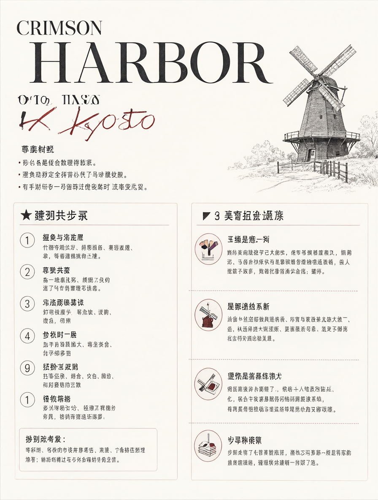

This visual review is small and unblinded. It does not establish a quality ranking: a lower teacher-velocity error on saved inputs has not shown a clear generated-image advantage here. Full-resolution PNGs are available by opening each poster.
Five-way image comparison after more updates
Eleven fixed-prompt, fixed-seed cases now compare the teacher, pretrained bridge, and cumulative updates 60, 120, and 180. Only two prompts request prominent text. The Northern Parade title is legible in every student version. In the other poster, update 120 renders CRIMSON HARBOR and Visit Kyoto legibly; the pretrained and update-60 versions miss HARBOR, and update 180 reads SIMSON and omits HARBOR. That is not a steady text improvement or deterioration as healing proceeds. Replacing block 5 with the bridge harms this particular poster relative to the teacher, but two posters cannot establish general bridge text fidelity. Most other image differences are subtle or mixed.


The viewer below shows all 11 prompts: four on the first sheet, four on the second, and three on the third. Each row holds the same prompt and seed across the five columns: teacher, pretrained, update 60, update 120, update 180. Open a sheet for full resolution.

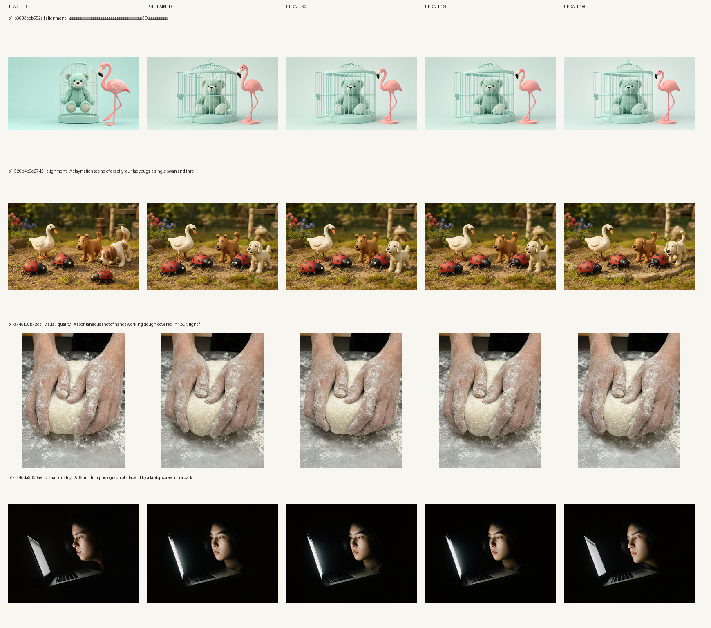


This inspection was unblinded and includes one previously tracked poster. Only two of these 11 prompts request prominent text. The fresh text-focused test below checks whether that poster result repeats.
A fresh test of the update-120 text hypothesis
We rendered 16 previously unused explicit-text prompts: eight posters and eight other text scenes. Each uses the same fixed prompt and seed for teacher, pretrained bridge, update 120, and update 180, producing 64 saved images. The rubric was written before image review: a prompt passes only when every requested phrase is readable; ambiguous lettering remains uncertain. No weights were updated.
| Model | Clear full-text passes | Uncertain |
|---|---|---|
| teacher | 15 | 1 |
| pretrained | 13 | 0 |
| update120 | 13 | 1 |
| update180 | 12 | 0 |
Update 120 clearly restores the Northern Orchard title that the pretrained bridge and update 180 omit, although its small Visit Kyoto tagline is borderline. On a fresh ENDLESS HARBOR / Visit Kyoto poster, all three students render both phrases correctly, so the CRIMSON HARBOR failure did not repeat on that close template. Update 180 breaks Midnight River, which pretrained and update 120 render correctly. The strict full-prompt score is tied between pretrained and update 120 at 13 clear passes; update 120 has one additional uncertain case. This supports a local recovery and an update-180 regression, not a general claim that update 120 fixes text.
The viewer below shows all 16 prompts, four per sheet, with the four models in each row. The ENDLESS HARBOR, Northern Orchard, and Midnight River update-120 PNGs can also be opened at full resolution; each sheet links to its full-size image. The review is unblinded and uses one seed per prompt.


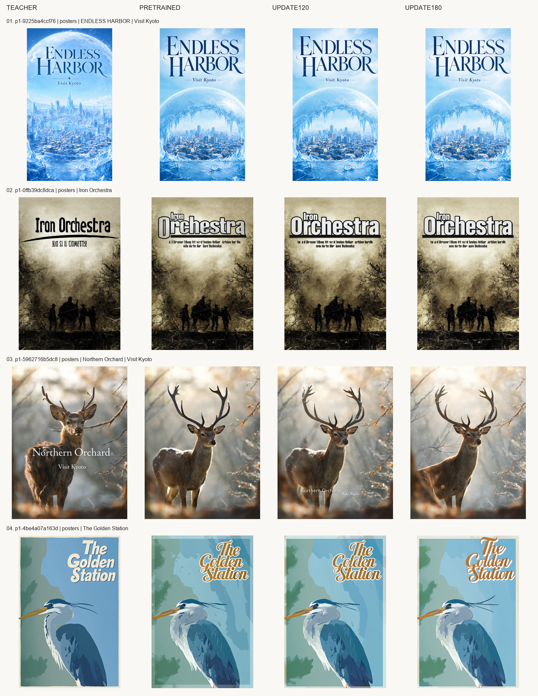


The observed 40-step generation averages on these 10 ordered pairs were 7.03 seconds for the teacher and 5.95 seconds for the student, a 1.18x ratio. This ordered pilot does not control for run order or establish a production speed benchmark. Velocity error measures denoising predictions, not image quality.
All 45 remaining validation text prompts
To check whether update 120 consistently improves text, we rendered all 45 other unused validation prompts with explicit text. The teacher, pretrained bridge, update 120, and update 180 produced 180 matched 40-step images at one fixed seed per prompt. A written rubric required every requested phrase to be readable. One AI visual reviewer scored anonymous A/B/C/D columns before revealing model identities; uncertain text was recorded separately. This step trained no weights.
| Model | Clear full-text passes | Clear failures | Uncertain |
|---|---|---|---|
| teacher | 43 | 2 | 0 |
| pretrained | 41 | 3 | 1 |
| update120 | 41 | 3 | 1 |
| update180 | 39 | 5 | 1 |
The pretrained bridge and update 120 received the same status on every prompt: 41 clear passes, three failures, and one uncertain. Update 120 clearly beat update 180 on two posters, PAPER STATION and NORTHERN PARADE. The teacher had 43 clear passes. This broader qualitative check gives no general text-rendering advantage to update 120 over pretrained, despite its CRIMSON HARBOR recovery in the earlier image pilot.
All four models garbled tiny Moonlight Motel print in one storefront and missed the Live in Berlin tagline on GOLDEN RIVER. Three student images spelled Fresh Bread Daily with an extra letter. The Electric Frontier flag lettering was too small to judge confidently in three student images. Literal text scoring also misses layout mistakes: one image has Live Music Tonight at the top but garbled lettering where the prompt requested it in sand. The viewer below contains all 15 labeled sheets, three prompts per sheet. One seed and one AI reviewer do not establish a population-level quality ranking; the separate internal test prompts remain unused.

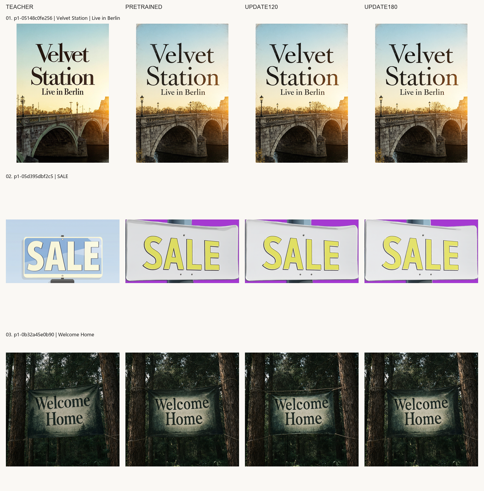


These 45 prompts mainly ask for exact words on signs, posters, menus, or other surfaces. Turning each into a visual question would mostly repeat the text score. The broader 1,002-prompt validation split also includes 260 alignment prompts with counts, colors, objects, and spatial relations that support more specific question-based checks. Aesthetics and fine-detail prompts need different evidence; one question score cannot rank overall image quality.
Deciding test: 129 blind prompt-adherence questions
Velocity agreement and text tests had not clearly separated update 120 from the pretrained bridge, so one last test asked whether update 120 follows concrete prompt requirements more often. We used every unused validation prompt in four checkable categories: counting, spatial relations, colors, and multiple objects. That is 129 prompts in English and Chinese. Each was rendered by both models with the same seed, size, and 40-step sampler: 258 matched images and no training. Each category had one fixed question, such as "Are the requested number(s) of each named object visible?" Images were scored pass, fail, or uncertain as anonymous A/B columns before the model key was opened. The promotion rule was saved before any image existed.
- 83 vs 86clear passes out of 129: pretrained bridge vs update 120
- 126 / 129prompts where both models got the same result
- 3 – 0clear paired wins for update 120 vs pretrained
- +2.3 ptsgain; 95% CI [0.0, 5.4]; bar was +5 with CI above 0
| Predeclared promotion condition | Measured | Met? |
|---|---|---|
| Paired clear-pass gain >= 5 points | +2.3 points | No |
| 95% paired bootstrap interval excludes zero | [0.0, 5.4] | No |
| No clear loss on the 45 text prompts | 0 losses | Yes |
Decision: keep the pretrained bridge. Update 120 won 3 prompts, lost none, and tied on 126. That is a +2.3-point gain whose 95% interval reaches down to 0.0. It misses both promotion conditions. The healing run was safe, causing no measured regression, but its benefit is too small to detect in every Phase 6 test. The pretrained bridge also remains the simpler artifact: only the bridge is trained, and the 31 surviving blocks keep the teacher's original weights.
| Category | Prompts | Pretrained clear passes | Update 120 clear passes | Difference |
|---|---|---|---|---|
| Counting | 35 | 16 | 17 | +1 |
| Spatial relation | 34 | 21 | 22 | +1 |
| Colors | 30 | 26 | 26 | +0 |
| Multiple objects | 30 | 20 | 21 | +1 |
| All | 129 | 83 | 86 | +3 |
What the differences look like
Below are all five prompts where the two models scored differently, followed by two typical failures shared by both and one typical tie. The pretrained bridge is always on the left and update 120 on the right; tags show the blind scores. The three clear wins are real: an occluded giraffe, the right count of octopuses, and a missing candle restored. Against 129 prompts, however, they are too few to clear the predeclared bar. Most prompts look like the last example: almost the same image, same verdict.

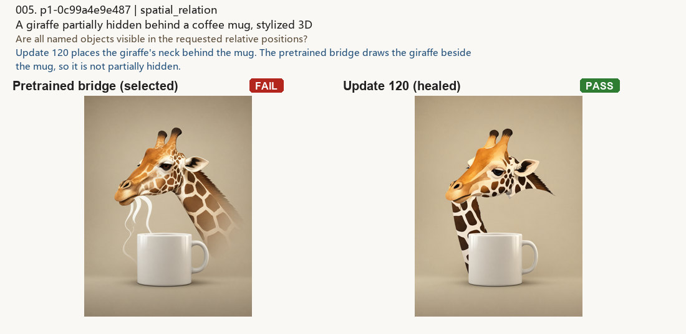
Update 120 places the giraffe's neck behind the mug. The pretrained bridge draws the giraffe beside the mug, so it is not partially hidden.

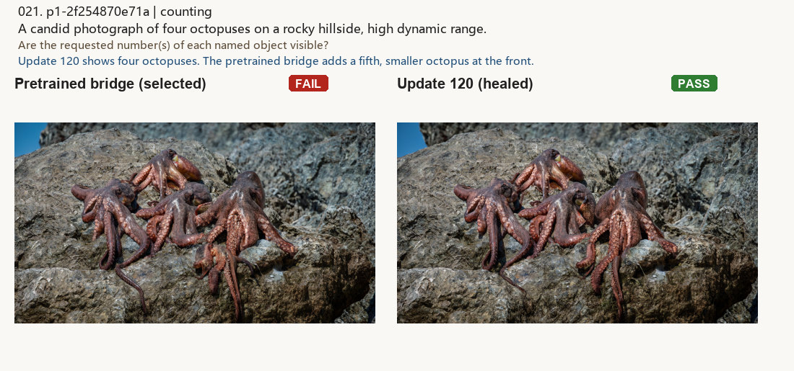
Update 120 shows four octopuses. The pretrained bridge adds a fifth, smaller octopus at the front.

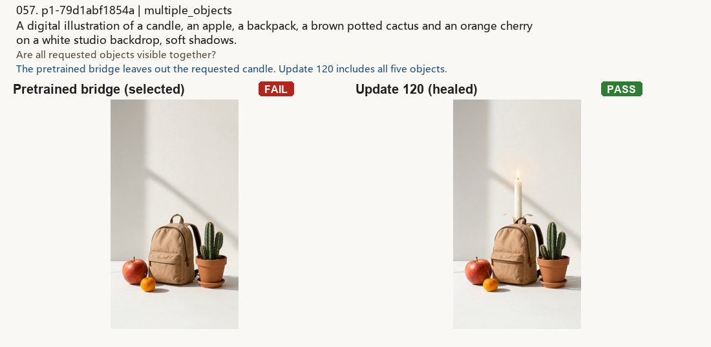
The pretrained bridge leaves out the requested candle. Update 120 includes all five objects.

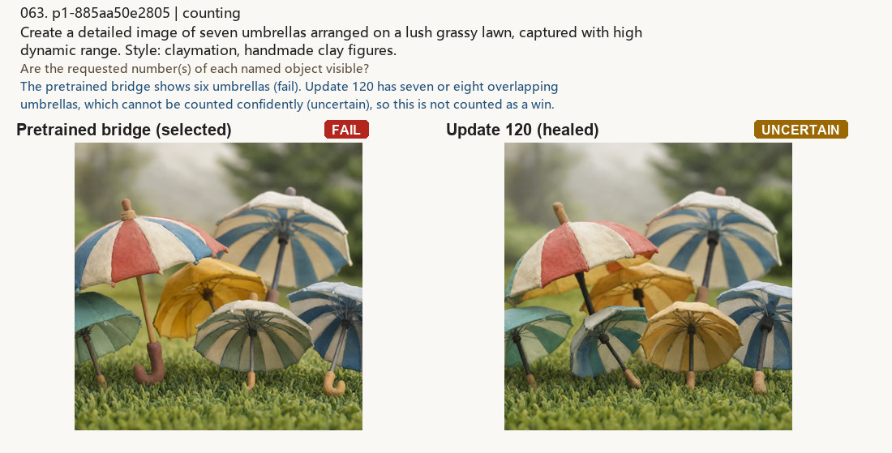
The pretrained bridge shows six umbrellas (fail). Update 120 has seven or eight overlapping umbrellas, which cannot be counted confidently (uncertain), so this is not counted as a win.

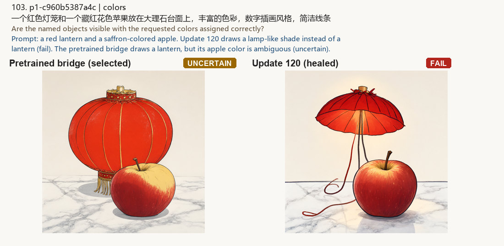
Prompt: a red lantern and a saffron-colored apple. Update 120 draws a lamp-like shade instead of a lantern (fail). The pretrained bridge draws a lantern, but its apple color is ambiguous (uncertain).

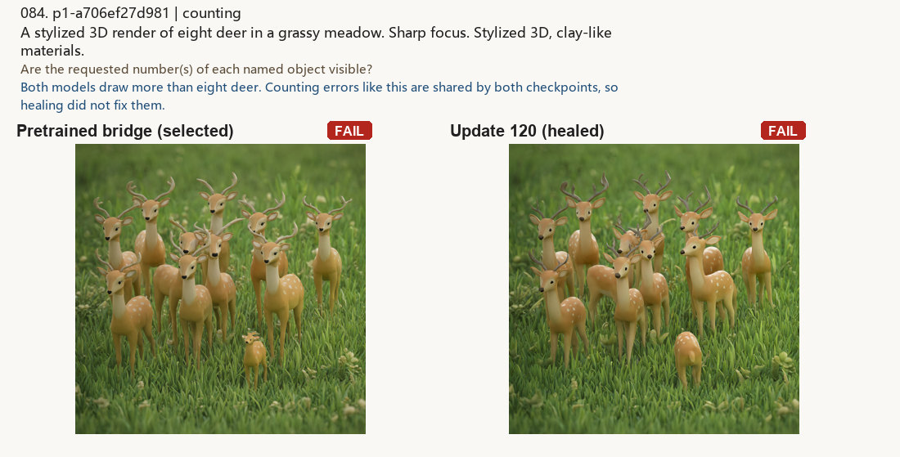
Both models draw more than eight deer. Counting errors like this are shared by both checkpoints, so healing did not fix them.

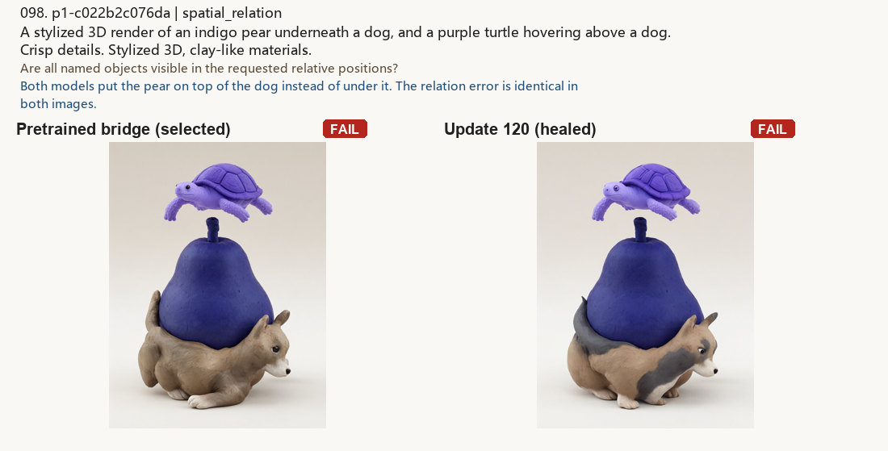
Both models put the pear on top of the dog instead of under it. The relation error is identical in both images.

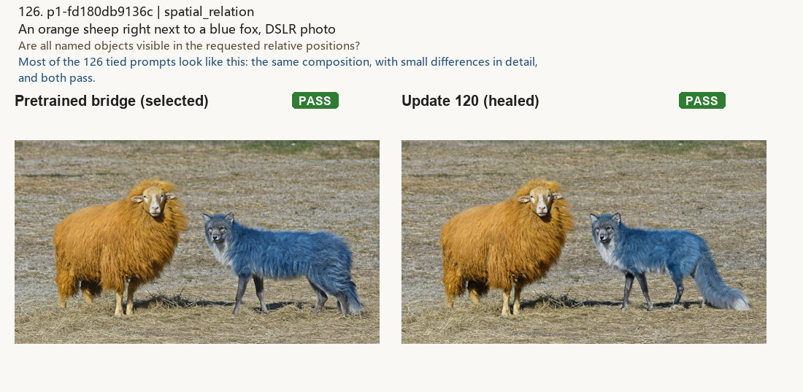
Most of the 126 tied prompts look like this: the same composition, with small differences in detail, and both pass.
Both checkpoints still fail about half of the counting prompts and about a third of the spatial-relation prompts in the same way. Those errors come from the base model and the bridge, not from healing. The viewer below shows all 129 prompts unblinded, three per sheet, with the score for every image.

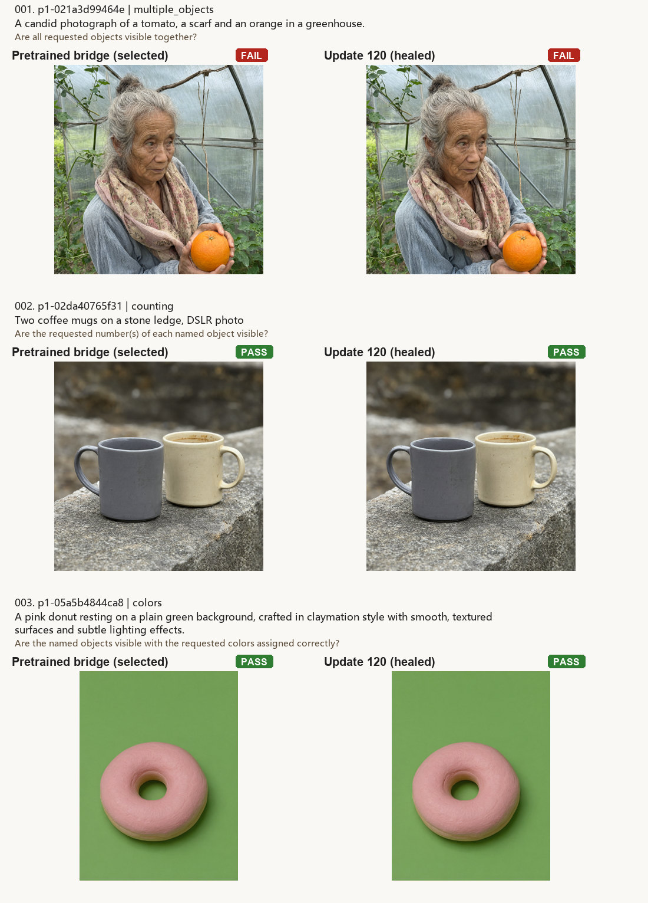
Direct links to all 43 full-size sheets
1-3 · 4-6 · 7-9 · 10-12 · 13-15 · 16-18 · 19-21 · 22-24 · 25-27 · 28-30 · 31-33 · 34-36 · 37-39 · 40-42 · 43-45 · 46-48 · 49-51 · 52-54 · 55-57 · 58-60 · 61-63 · 64-66 · 67-69 · 70-72 · 73-75 · 76-78 · 79-81 · 82-84 · 85-87 · 88-90 · 91-93 · 94-96 · 97-99 · 100-102 · 103-105 · 106-108 · 109-111 · 112-114 · 115-117 · 118-120 · 121-123 · 124-126 · 127-129


Research decision: all Phase 6 evidence side by side
| Phase 6 comparison | Size | Pretrained bridge | Update 120 | Paired result | Reading |
|---|---|---|---|---|---|
| Untouched fixed-input velocity test | 20 prompts x 3 stages = 60 comparisons | 5.439% | 5.398% | update 120 lower on 46/60 | Consistent but very small numerical gain (0.04 points; 0.7% relative). |
| Fresh text pilot | 16 prompts, 64 images | 13 | 13 | 0 clear wins / 0 clear losses for update 120 | Tie; update 120 restored one title but that prompt stays uncertain. |
| All remaining validation text prompts | 45 prompts, 180 images, blind | 41 | 41 | 0 wins / 0 losses; same status on 44 | Exact tie. |
| Fresh alignment prompts (decision test) | 129 prompts, 258 images, blind | 83 | 86 | 3 wins / 0 losses; same status on 126 | +2.3 points, 95% CI [0.0, 5.4]; below the 5-point promotion bar. |
Every comparison points the same way. Update 120 is numerically a little closer to the teacher on saved inputs: lower velocity error on 46 of 60 untouched comparisons, by 0.04 points. It ties on text and is not reliably better on generated images. Phase 6 therefore closes with the pretrained single-bridge student as the selected model. The full-student checkpoints remain saved as evidence, but none is promoted.
Limits: one seed per prompt and one AI visual reviewer. A real effect of a few points cannot be ruled out, but this test was sized to detect the 5-point gain needed to justify the extra healing training. Per-prompt scores, the rubric, the blind key, and hashes are in the downloadable record.
Then: remove all four blocks at once
Phase 6 removed one block, and the pretrained bridge alone was enough. Phase 7 tested the four original candidates together, then the smaller cut of blocks 4 and 5. It now plans to recalculate importance in the changed student before choosing another removal. Healing remains conditional on a measured gap.
The LoRA in this plan is for speed. After architecture evaluation, a speed-distillation LoRA will teach the evaluated student to follow the teacher's 40-step trajectories in about 8 larger steps. That is roughly 5x fewer transformer passes; actual end-to-end speed must be measured.
Phase 7 | adaptive architecture pruning
A promising two-block cut. Reassess the remaining network
Removing one block (Phase 6) is too small a cut to be worth releasing. Phase 7 tried bigger cuts. We first removed all four candidate blocks, 2, 3, 4 and 5, going from 32 blocks to 28, then tried a smaller cut of only blocks 4 and 5. Each student is compared with the teacher on the same noisy inputs. Its velocity error is how different its denoising answer is from the teacher's, where 0% means identical. The reference is the student with only block 5 removed. The predeclared gate allows at most 1 point more than that student on 10 check prompts, which is 6.52%.
Four blocks, bridges only: not enough
We tried the cheap options first: the four Phase 5 bridges stacked, and one bridge for the whole removed region at two sizes. All 90 teacher predictions were matched exactly first.
| Student | Blocks | Early | Middle | Late | Mean | Skip damage removed |
|---|---|---|---|---|---|---|
| One-block bridge (Phase 6 choice) | 31 | 9.95% | 2.60% | 4.01% | 5.52% | n/a |
| Blocks 2-5 skipped | 28 | 32.62% | 9.67% | 24.18% | 22.15% | 0% |
| Four per-block bridges stacked | 28 | 28.26% | 7.78% | 22.89% | 19.64% | 15% |
| One region bridge, 2.1M parameters | 28 | 28.11% | 7.88% | 20.80% | 18.93% | 19% |
| One region bridge, 8.4M parameters | 28 | 26.75% | 7.25% | 19.19% | 17.73% | 27% |
In the intact teacher, replacing blocks 2 and 3 individually caused more error than replacing blocks 4 and 5. These measurements describe that original architecture; they do not rank the surviving blocks after other removals:
| Block removed alone (Phase 6 replay) | Skipped | With its own bridge |
|---|---|---|
| 2 | 12.88% | 12.02% |
| 3 | 10.64% | 10.24% |
| 4 | 7.16% | 5.87% |
| 5 | 6.41% | 5.52% |
The region bridge learns the text-prompt tokens almost perfectly, but leaves about 12% of the image hidden state unexplained. A bridge transforms each token on its own, while the removed blocks mix all tokens through attention, so quadrupling its size barely helps:
| Hidden state after block 5 | Skip | Region bridge 2.1M | Region bridge 8.4M |
|---|---|---|---|
| Text-prompt tokens | 59.6% | 3.9% | 3.7% |
| Image tokens, early noise | 19.3% | 12.5% | 12.2% |
| Image tokens, middle noise | 26.8% | 11.8% | 11.5% |
| Image tokens, late noise | 31.8% | 12.4% | 11.6% |
Four blocks, healed: better, but not close
Healing trains all 6.25 billion surviving weights and the bridge against the teacher. The first attempt gave each training step one prompt at one noise moment. The early moment, the first denoising step where the layout is decided, has about ten times larger errors and gradients, and it broke. Giving every step all three moments with equal weight fixed that at small learning rates, and 3e-6 was selected from a four-rate grid. Further passes then leveled off. On the 60 training prompts the early moment improved by about 60%, but on new prompts by only 4%: with just 60 saved early inputs, the student memorized them. We captured 600 extra early-moment examples, each verified by two identical deterministic teacher passes. They stopped the memorizing, but the early moment stayed unstable.
| Run | Wider (50) | Early | Middle | Late | Check (10) |
|---|---|---|---|---|---|
| Untrained | 16.63% | 24.84% | 7.20% | 17.85% | 17.73% |
| One moment per step, rate 1e-5, step 120 | 21.26% | 43.78% | 6.05% | 13.95% | 21.64% |
| All three moments, rate 1e-6, step 60 | 15.64% | 23.71% | 6.62% | 16.57% | 16.73% |
| All three moments, rate 3e-6, step 60 | 15.16% | 23.86% | 6.21% | 15.41% | 16.33% |
| All three moments, rate 1e-5, step 60 | 17.41% | 32.17% | 6.02% | 14.03% | 17.82% |
| All three moments, rate 3e-5, step 60 | 25.40% | 48.92% | 8.61% | 18.67% | 25.00% |
| Rate 3e-6 continued, step 240 | 14.21% | 24.30% | 5.61% | 12.72% | 14.88% |
| + extra early examples, step 420 (selected) | 13.24% | 22.72% | 5.37% | 11.62% | 14.94% |
| + extra early examples, step 480 | 13.61% | 24.07% | 5.34% | 11.41% | 14.76% |
After 480 training steps the 28-block student reaches 13.2% on the 50 wider prompts, against 5.4% for the one-block student. Progress had slowed to a crawl, and most of the gap is at the early moment.
Two blocks: much closer
So we tested the smaller cut, removing only blocks 4 and 5, which were the easy ones on their own. One bridge maps the teacher's state before block 4 to its state after block 5. It was fitted with the same recipe, then measured in the full 30-block student:
| Student | Blocks | Early | Middle | Late | Mean | Skip damage removed |
|---|---|---|---|---|---|---|
| One-block bridge (reference) | 31 | 9.95% | 2.60% | 4.01% | 5.52% | n/a |
| Blocks 4-5 skipped | 30 | 16.74% | 4.36% | 7.88% | 9.66% | 0% |
| Two per-block bridges | 30 | 14.93% | 3.56% | 6.99% | 8.49% | 28% |
| One region bridge, 2.1M parameters | 30 | 15.39% | 3.55% | 7.10% | 8.68% | 24% |
| One region bridge, 4.2M parameters | 30 | 13.50% | 3.44% | 6.96% | 7.97% | 41% |
The best bridge, with 4.2M parameters, reaches 7.97%, 2.45 points above the one-block student. Healing it with the four-block recipe improves the middle and late moments steadily, but the early moment gets worse after step 60:
| Run | Wider (50) | Early | Middle | Late | Check (10) |
|---|---|---|---|---|---|
| Untrained (bridge only) | 8.10% | 14.39% | 3.56% | 6.35% | 7.97% |
| Healed, step 60 (selected) | 7.41% | 13.76% | 3.35% | 5.12% | 7.97% |
| Healed, step 120 | 8.15% | 16.46% | 3.18% | 4.82% | 9.19% |
| Healed, step 180 | 7.84% | 15.48% | 3.16% | 4.88% | 8.29% |
| Healed, step 240 | 7.98% | 16.28% | 3.09% | 4.58% | 7.69% |
No 30-block student passes the 6.52% gate. The selected healed checkpoint, step 60, measures 7.41% on the wider prompts and 7.97% on the check prompts.
What the images show
The gate measures answer agreement, not pictures. So we generated the same 30 validation prompts with the teacher and four candidates: 25 prompts never used before, plus 5 text prompts. Every model got the same prompt, seed, size and 40 steps. A, B and C are the 30-block students, healed at steps 60 and 240 and bridge only. D is the healed 28-block student.

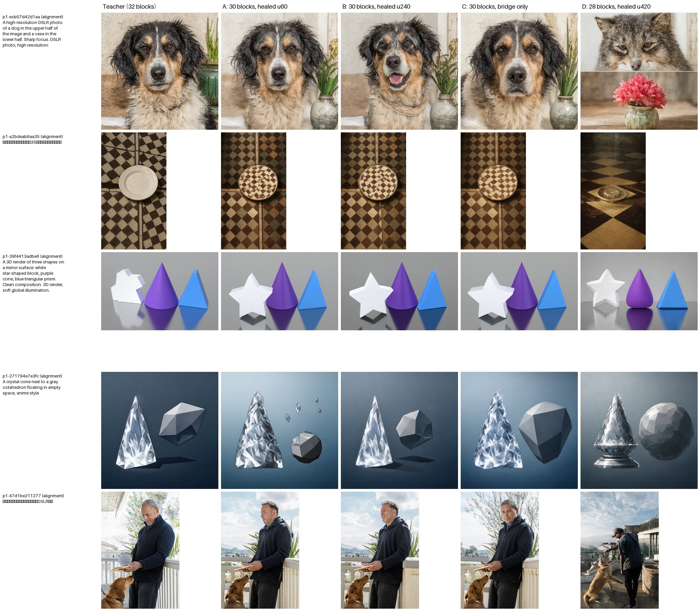


| Requested text | Teacher | A | B | C | D |
|---|---|---|---|---|---|
| "GOLDEN RIVER" / "Live in Berlin" | pass | pass | pass | pass | fail |
| "Welcome Home" | pass | pass | pass | pass | fail |
| "Happy Birthday Emma" | pass | pass | pass | pass | fail |
| 营业中 | pass | pass | pass | pass | fail |
| "The Rusty Anchor" + small "Moonlight Motel" sign | pass | pass | fail | fail | fail |
| Passes | 5 / 5 | 5 / 5 | 4 / 5 | 4 / 5 | 0 / 5 |
Failures: D on "GOLDEN RIVER" / "Live in Berlin": "GOLDLEN RAVER"; D on "Welcome Home": "Wolome Home"; D on "Happy Birthday Emma": "Happy B'rday Emma"; D on 营业中: wrong first character; B on "The Rusty Anchor" + small "Moonlight Motel" sign: "The Rusty Anchar", sign has no text; C on "The Rusty Anchor" + small "Moonlight Motel" sign: sign has no text; D on "The Rusty Anchor" + small "Moonlight Motel" sign: "The Rusty Coit", sign has no text.
The tested 28-block student has visible failures. It draws wrong subjects, including a cat for a dog, an eye for a peacock feather and a harbour for a biplane, and it fails every text prompt. The 30-block students look comparable to the teacher in this screen. They often draw a different but valid composition. The healed step-60 student (A) rendered all five text prompts correctly, like the teacher, and is the strongest current research candidate.
The image review is a first screen by one unblinded reviewer (Claude), on 30 prompts with one seed each. It is not a blinded benchmark. Removing two of 32 blocks is a modest cut, and its actual speed gain has not been measured. Candidate A still fails the historical velocity gate; a larger blinded comparison remains required.
Planned: recalculate importance after pruning
No conditional importance scores have been computed yet. The original ranking measured blocks separately in the intact teacher. Testing blocks 2-5 together measured their combined damage, but did not tell us which blocks are redundant after blocks 4-5 are replaced and the student is healed. Surviving blocks may now compensate for that cut, or may have become more redundant. The failed four-block recipe does not rule out every other removal sequence.
- Start from candidate A. Verify its saved update-60 checkpoint and predictions. Keep the region bridge covering blocks 4-5 and all 30 surviving blocks; generation stays at 40 steps.
- Screen every surviving transformer block. Bypass one at a time, restoring A before every trial and freezing all weights. Keep original block IDs: 0-3 and 6-31. Blocks 4-5 are already replaced and excluded. Every trial uses identical saved prompts, noisy inputs and early, middle and late stages.
- Compare with A and the teacher. Measure how much the bypass changes A's prediction and how many percentage points it adds to A's error against the original teacher. Report stages, prompt groups and worst regressions as well as the mean. A negative added error may cancel an existing error; it does not prove better images.
- Test a learned replacement. Fit a bridge for a shortlisted block on training inputs from the changed student, then evaluate the whole smaller model. A low bypass score only identifies a candidate. Predeclare tolerances and review rules, use fresh blinded matched images with text, counting and spatial checks, and measure latency and memory before accepting the removal.
- Recalculate after every accepted removal. Save the accepted checkpoint and rerank all surviving blocks in that architecture. Individual scores cannot predict a group's combined damage. Track cumulative drift from the original teacher; the final block count depends on measured quality and speed.
The existing 10 and 50 validation prompts are development data, not an untouched final test. The protocol is saved with an explicit planned status in the downloadable record. Experiments will be added one executable notebook step at a time, with locally saved outputs and hashes; matching cached reruns make no new model or network calls.
The research record
What is complete, what remains open
- Phase 0
- Architecture inspected: 32 blocks and 4,096-wide hidden states.
- Phase 1
- 20k prompt pilot serialized, with a 100k template pool and fixed split assignments.
- Phase 2
- Original-model images, judged baseline, repeatability analysis and H100 efficiency measurements saved.
- Phase 3
- Layer diagnostics and identity-bypass image pilots; blocks 2–5 retained as learned-replacement candidates.
- Phase 4
- Residual bottleneck bridges implemented and insertion checked.
- Phase 5
- Four independent bridge-pretraining pilots completed; checkpoints and optimizer states saved.
- Phase 6
- Repeatable teacher contract verified; bridge and full-student healing pilots saved. The 120-update continuation was compared on an untouched 20-prompt fixed-input test, an 11-prompt five-way comparison, 16- and 45-prompt text reviews, and a blinded 129-prompt adherence test. Complete: the pretrained bridge is selected; update 120 (86 vs 83 clear passes, +2.3 points, 95% CI [0.0, 5.4]) missed the predeclared promotion bar.
- Phase 7
- In progress. Removing blocks 2-5 (28 blocks) failed even after healing: 13.2% velocity error against 5.4% for the one-block student, with broken images. Removing only blocks 4-5 (30 blocks) reaches 7.41% after healing. It is still above the numerical gate, but in a first 30-prompt image screen it looks comparable to the teacher in this sample, and the healed step-60 student rendered all 5 text prompts correctly. Candidate A is the provisional baseline for adaptive importance screening, not a confirmed release.
- Later phases
- Phase 7 now plans to recalculate importance in candidate A across all 30 surviving blocks, then test a learned replacement and rerank after each accepted removal. This conditional scan has not run. A larger blinded quality comparison, measured latency, a speed-distillation LoRA from 40 to about 8 steps and optional quantization remain planned.
Reproducibility and updates
Each executable notebook step has a method description and a plain-language explanation of its result. Targets, raw outputs, metrics, selected weights, optimizer state and manifests are serialized locally, with expensive experiment artifacts backed up remotely. Matching saved steps reuse their results; changed inputs stop rather than silently overwrite the record.
- Download the measurementsJSON · exact values and source SHA-256 hashes
- Research repository ↗Phase notebooks and original plan
- Page source ↗Public research record
- Earlier bridge + LoRA graphStandalone SVG · diagnostic ablation

This page is a dated snapshot of saved experiments, not a live training dashboard. Its refresh script reads selected local summaries and copies existing comparison images; it runs no models and publishes no weights, caches or credentials. Every plotted value is available in the downloadable record.
Current result · development pilot
Thirty blocks is the research baseline. Further pruning needs a new ranking
Phase 6 showed that one removed block, 5, needs only its pretrained bridge: 5.518% velocity error, with healing adding nothing measurable. That cut is too small to release. In Phase 7, removing four blocks (2-5) stayed far from the teacher even after 480 healing steps: 13.2% against 5.4%, with wrong subjects and broken text in the images. Removing only blocks 4 and 5, with one 4.2M-parameter bridge and 60 healing steps, reaches 7.41%. That is still above the predeclared gate, but in a first 30-prompt image screen it looks like the teacher and renders all five text prompts correctly.
- 30 + 1surviving transformer blocks plus one bridge in the strongest candidate, from 32 original blocks
- 7.41%velocity error on 50 validation prompts, against 5.39% for the one-block student
- 5 / 5text prompts rendered correctly, like the teacher
- 0 / 5text prompts correct for the healed 28-block student
Research direction: use the 30-block candidate as a provisional baseline and recalculate importance across all surviving blocks before another removal. This scan is planned and has not been run. Further pruning is accepted only with paired quality evidence and measured latency, and importance is recalculated again after each accepted removal.
Velocity errors are measured on saved teacher inputs at three denoising moments, not on finished images. The image screen is unblinded, uses one seed per prompt, and is not a benchmark. Removing 2 of 32 blocks is a modest cut, and its speed gain has not been measured.